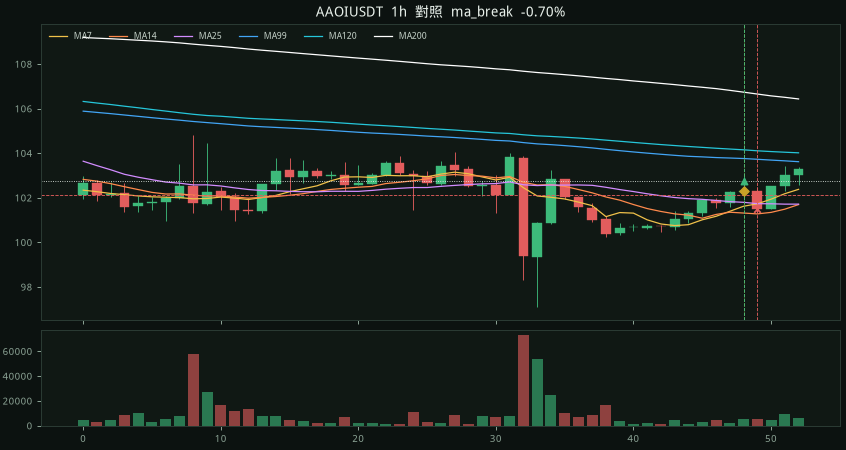
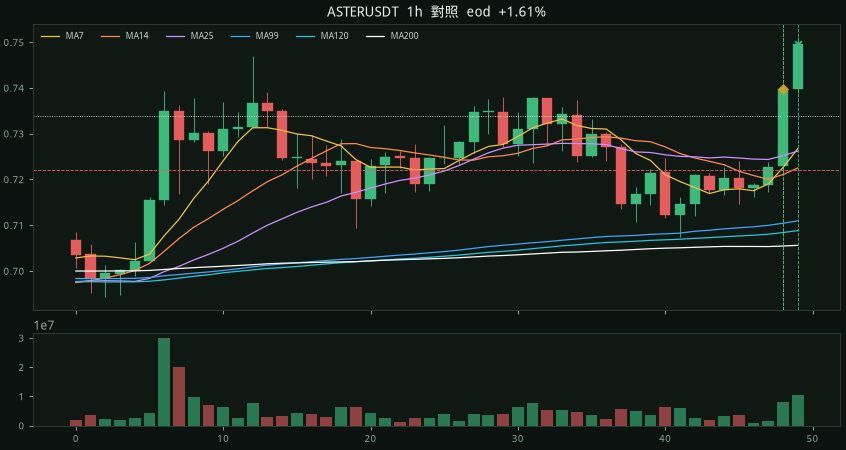

#1 · ROBOUSDT08-28 19:15 → 08-28 23:15
+4.53%
entry 0.01346 MA200 0.0133741 exit 0.01407 time 離200 +0.72% 實體 +0.90% 2.0×ATR 量比 2.1× MFE +6.02% MAE -0.59% 無停損 1h +0.45% 2h +2.53%
15m

1h 對照

近 7 天 · 2026-08-28 19:00 → 2026-09-04 16:15 · 掃 260 檔永續。在 MA200 附近進：放量陽線收盤站上 200，離 200 仍 ≤2%（不要追已經跑遠的大陽）。實體 ≥0.4%、振幅 ≥1.5×ATR、量比 ≥1.7×、收在棒子上方 65%、創 20 根新高、MA7 > MA14 > MA25。下一根開盤做多，收盤跌破 MA200 出場，最多 4 小時。同一根 15m ≥4 檔視為大盤一起過線。
MFE 均 +1.79% · MAE 均 -1.21%
擴張 128筆 勝率 28% -8.6%
出場 time 61 · ma_break 66 · eod 1
無停損續走 15m 勝率 40% 均 -0.12% · 1h 勝率 41% 均 -0.13% · 2h 勝率 46% 均 +0.09% · 4h 勝率 35% 均 -0.01%
等權重每筆 1 單位，不含手續費／資金費。下面 128 筆都有圖：上面 15m、下面 1h 對照。黃菱形＝在 200 附近的擴張棒、綠三角＝進場、× ＝出場。
entry 0.01346 MA200 0.0133741 exit 0.01407 time 離200 +0.72% 實體 +0.90% 2.0×ATR 量比 2.1× MFE +6.02% MAE -0.59% 無停損 1h +0.45% 2h +2.53%
entry 0.06946 MA200 0.0687827 exit 0.06913 time 離200 +0.94% 實體 +0.97% 1.9×ATR 量比 2.3× MFE +1.87% MAE -1.11% 無停損 1h +0.92% 2h -0.30%


entry 0.5232 MA200 0.516947 exit 0.5096 ma_break 離200 +1.23% 實體 +0.67% 2.3×ATR 量比 2.4× MFE +0.25% MAE -3.10% 無停損 1h -0.82% 2h -1.70%


entry 0.10924 MA200 0.108496 exit 0.10787 ma_break 離200 +0.68% 實體 +1.67% 3.4×ATR 量比 3.9× MFE +0.46% MAE -1.30% 無停損 1h -1.38% 2h -1.49%


entry 0.0358 MA200 0.0356823 exit 0.03567 ma_break 離200 +0.30% 實體 +0.56% 2.2×ATR 量比 1.8× MFE +1.03% MAE -0.78% 無停損 1h -1.54% 2h -1.01%


entry 468.5 MA200 466.052 exit 462.51 ma_break 離200 +0.56% 實體 +1.37% 9.0×ATR 量比 10.4× MFE +1.44% MAE -1.34% 無停損 1h -0.02% 2h -1.56%


entry 261.08 MA200 258.689 exit 265.95 time 離200 +0.92% 實體 +0.54% 5.4×ATR 量比 4.8× MFE +2.55% MAE -0.09% 無停損 1h +2.20% 2h +1.74%


entry 29.97 MA200 29.6795 exit 29.69 ma_break 離200 +0.91% 實體 +3.31% 3.2×ATR 量比 2.5× MFE +0.33% MAE -2.17% 無停損 1h -2.84% 2h -5.61%


entry 347.48 MA200 341.777 exit 347.85 time 離200 +1.67% 實體 +0.42% 3.5×ATR 量比 3.6× MFE +0.48% MAE -0.65% 無停損 1h +0.05% 2h -0.36%


entry 0.001023 MA200 0.00101678 exit 0.001015 ma_break 離200 +0.62% 實體 +1.21% 2.4×ATR 量比 3.1× MFE +0.01% MAE -0.80% 無停損 1h -0.23% 2h -0.30%


entry 0.008229 MA200 0.00807008 exit 0.008228 time 離200 +1.97% 實體 +1.06% 1.9×ATR 量比 1.8× MFE +1.06% MAE -0.64% 無停損 1h +0.47% 2h -0.21%


entry 0.003715 MA200 0.00369642 exit 0.003691 ma_break 離200 +0.50% 實體 +1.31% 4.4×ATR 量比 5.2× MFE +0.43% MAE -0.65% 無停損 1h -1.40% 2h -1.43%


entry 0.04358 MA200 0.043314 exit 0.04318 ma_break 離200 +0.59% 實體 +0.74% 2.1×ATR 量比 2.3× MFE +0.34% MAE -0.99% 無停損 1h -1.35% 2h -1.12%


entry 0.008496 MA200 0.00840259 exit 0.008416 ma_break 離200 +1.11% 實體 +1.53% 4.1×ATR 量比 3.9× MFE +1.84% MAE -1.00% 無停損 1h +0.24% 2h +0.93%


entry 0.006215 MA200 0.00612005 exit 0.006181 time 離200 +1.58% 實體 +0.94% 2.4×ATR 量比 5.4× MFE +4.70% MAE -1.42% 無停損 1h +2.33% 2h +2.88%


entry 0.03602 MA200 0.0356381 exit 0.03581 time 離200 +1.04% 實體 +0.53% 1.6×ATR 量比 2.5× MFE +5.16% MAE -0.86% 無停損 1h -0.25% 2h +0.25%


entry 0.4596 MA200 0.453314 exit 0.4533 ma_break 離200 +1.41% 實體 +1.28% 2.5×ATR 量比 2.7× MFE +2.79% MAE -1.41% 無停損 1h +1.89% 2h +1.54%


entry 0.0277 MA200 0.0275411 exit 0.02735 ma_break 離200 +0.58% 實體 +1.69% 2.7×ATR 量比 3.3× MFE +0.58% MAE -1.37% 無停損 1h -1.26% 2h -0.97%


entry 0.01902 MA200 0.018906 exit 0.01879 ma_break 離200 +0.60% 實體 +1.39% 2.3×ATR 量比 2.1× MFE +0.42% MAE -1.21% 無停損 1h -0.89% 2h -0.63%


entry 39.51 MA200 38.788 exit 42.14 time 離200 +1.86% 實體 +1.05% 1.9×ATR 量比 2.4× MFE +7.90% MAE -0.25% 無停損 1h +1.62% 2h +5.67%


entry 0.12947 MA200 0.127854 exit 0.13305 time 離200 +1.26% 實體 +1.12% 2.7×ATR 量比 2.1× MFE +9.21% MAE -1.07% 無停損 1h -0.48% 2h +7.89%


entry 0.05503 MA200 0.054406 exit 0.05602 time 離200 +1.18% 實體 +0.86% 2.0×ATR 量比 1.7× MFE +5.25% MAE -3.67% 無停損 1h -0.36% 2h +1.18%


entry 0.00621 MA200 0.00615357 exit 0.006151 ma_break 離200 +0.88% 實體 +2.48% 5.5×ATR 量比 9.7× MFE +0.03% MAE -1.71% 無停損 1h -1.32% 2h -1.00%


entry 0.25344 MA200 0.248601 exit 0.24753 ma_break 離200 +1.95% 實體 +1.92% 3.4×ATR 量比 2.1× MFE +4.44% MAE -2.46% 無停損 1h +3.29% 2h -0.26%


entry 0.04837 MA200 0.0479673 exit 0.04786 ma_break 離200 +0.86% 實體 +1.92% 4.6×ATR 量比 4.4× MFE +0.52% MAE -1.22% 無停損 1h -0.83% 2h -0.76%


entry 0.004808 MA200 0.00471789 exit 0.00484 time 離200 +1.91% 實體 +2.06% 4.2×ATR 量比 5.4× MFE +1.73% MAE -1.35% 無停損 1h +0.46% 2h +0.31%


entry 0.4998 MA200 0.492943 exit 0.4917 ma_break 離200 +1.39% 實體 +0.58% 2.0×ATR 量比 2.5× MFE +0.00% MAE -1.68% 無停損 1h -0.94% 2h -2.00%


entry 0.04041 MA200 0.0397665 exit 0.03974 ma_break 離200 +1.62% 實體 +1.97% 6.0×ATR 量比 7.2× MFE +6.38% MAE -2.47% 無停損 1h +0.87% 2h -1.41%


entry 3.5211 MA200 3.50163 exit 3.4935 ma_break 離200 +0.56% 實體 +0.87% 2.3×ATR 量比 1.9× MFE +0.49% MAE -0.80% 無停損 1h -0.33% 2h -0.99%


entry 0.05597 MA200 0.0555301 exit 0.05557 time 離200 +0.76% 實體 +0.83% 1.7×ATR 量比 2.3× MFE +0.30% MAE -0.98% 無停損 1h +0.04% 2h -0.46%


entry 4.551 MA200 4.51512 exit 4.658 time 離200 +0.79% 實體 +1.45% 3.2×ATR 量比 2.5× MFE +3.45% MAE -0.57% 無停損 1h +1.45% 2h +2.53%


entry 0.06882 MA200 0.0682032 exit 0.06851 time 離200 +0.79% 實體 +0.64% 1.9×ATR 量比 1.9× MFE +6.51% MAE -0.68% 無停損 1h +1.21% 2h +2.98%


entry 0.2846 MA200 0.279851 exit 0.2859 time 離200 +1.70% 實體 +2.52% 2.7×ATR 量比 5.5× MFE +4.29% MAE -1.48% 無停損 1h +0.21% 2h +0.04%


entry 0.16191 MA200 0.161863 exit 0.16069 ma_break 離200 +0.04% 實體 +1.10% 1.7×ATR 量比 1.9× MFE +0.07% MAE -1.00% 無停損 1h -0.74% 2h -2.06%


entry 0.3618 MA200 0.358791 exit 0.3584 ma_break 離200 +0.84% 實體 +0.50% 1.9×ATR 量比 2.9× MFE +0.44% MAE -1.19% 無停損 1h -0.25% 2h -0.69%


entry 1.7144 MA200 1.70532 exit 1.7041 ma_break 離200 +0.53% 實體 +0.72% 2.6×ATR 量比 3.1× MFE +0.45% MAE -0.80% 無停損 1h -0.35% 2h +0.24%


entry 1.7488 MA200 1.71835 exit 1.7442 time 離200 +1.78% 實體 +0.49% 2.4×ATR 量比 6.0× MFE +0.31% MAE -0.42% 無停損 1h -0.32% 2h -0.23%


entry 0.004703 MA200 0.0046254 exit 0.004582 ma_break 離200 +1.66% 實體 +1.49% 4.2×ATR 量比 5.9× MFE +0.38% MAE -2.62% 無停損 1h -3.27% 2h -3.95%


entry 0.01569 MA200 0.0154034 exit 0.0155 time 離200 +1.93% 實體 +1.09% 2.1×ATR 量比 2.9× MFE +0.32% MAE -1.98% 無停損 1h -1.47% 2h -0.57%


entry 0.1633 MA200 0.16114 exit 0.1646 time 離200 +1.40% 實體 +1.24% 3.1×ATR 量比 3.1× MFE +1.96% MAE -0.61% 無停損 1h +0.98% 2h +1.10%


entry 0.1725 MA200 0.169183 exit 0.1726 time 離200 +1.96% 實體 +0.70% 2.0×ATR 量比 1.9× MFE +0.58% MAE -1.28% 無停損 1h -0.58% 2h +0.35%


entry 0.9154 MA200 0.903302 exit 0.9082 time 離200 +1.34% 實體 +0.46% 1.9×ATR 量比 2.0× MFE +1.46% MAE -0.84% 無停損 1h +0.66% 2h +0.04%


entry 0.03927 MA200 0.0389358 exit 0.03956 time 離200 +0.86% 實體 +0.56% 1.6×ATR 量比 2.0× MFE +1.53% MAE -0.20% 無停損 1h +0.43% 2h +0.25%


entry 0.005194 MA200 0.00513619 exit 0.005152 time 離200 +1.13% 實體 +0.80% 2.9×ATR 量比 2.2× MFE +0.67% MAE -0.83% 無停損 1h -0.31% 2h +0.23%


entry 0.0037049 MA200 0.00365475 exit 0.0036954 time 離200 +1.37% 實體 +0.70% 2.2×ATR 量比 2.4× MFE +2.74% MAE -0.59% 無停損 1h +1.16% 2h +1.08%


entry 0.0136 MA200 0.0134392 exit 0.01343 ma_break 離200 +1.05% 實體 +0.59% 1.8×ATR 量比 2.6× MFE +0.22% MAE -1.40% 無停損 1h -0.74% 2h +1.54%


entry 0.06906 MA200 0.0688932 exit 0.06859 ma_break 離200 +0.23% 實體 +1.57% 3.3×ATR 量比 4.5× MFE +0.20% MAE -0.81% 無停損 1h +0.06% 2h -0.06%


entry 84.78 MA200 83.1179 exit 84.31 time 離200 +2.00% 實體 +0.44% 3.4×ATR 量比 2.4× MFE +0.97% MAE -0.84% 無停損 1h +0.12% 2h +0.02%


entry 38.68 MA200 38.4614 exit 39.23 time 離200 +0.57% 實體 +0.55% 5.9×ATR 量比 8.0× MFE +1.89% MAE -0.16% 無停損 1h +0.70% 2h +0.90%


entry 0.4194 MA200 0.412176 exit 0.39274 ma_break 離200 +1.68% 實體 +4.88% 5.2×ATR 量比 4.3× MFE +0.01% MAE -6.94% 無停損 1h -4.38% 2h -2.02%


entry 0.008465 MA200 0.00841205 exit 0.00839 ma_break 離200 +0.61% 實體 +2.73% 3.5×ATR 量比 3.5× MFE +1.08% MAE -1.28% 無停損 1h -0.26% 2h +0.01%


entry 0.004562 MA200 0.00453751 exit 0.004685 time 離200 +0.52% 實體 +1.81% 3.0×ATR 量比 5.0× MFE +7.30% MAE -0.33% 無停損 1h +1.10% 2h +2.89%


entry 2.117 MA200 2.08566 exit 2.089 ma_break 離200 +1.41% 實體 +1.20% 2.6×ATR 量比 2.4× MFE +1.51% MAE -1.42% 無停損 1h -0.24% 2h -0.19%


entry 0.01347 MA200 0.0134265 exit 0.01338 ma_break 離200 +0.18% 實體 +0.98% 2.2×ATR 量比 4.6× MFE +0.52% MAE -0.74% 無停損 1h +0.15% 2h +0.07%


entry 0.5487 MA200 0.539974 exit 0.5444 time 離200 +1.60% 實體 +1.91% 2.6×ATR 量比 3.0× MFE +1.02% MAE -0.97% 無停損 1h -0.47% 2h +0.49%


entry 0.05187 MA200 0.0517764 exit 0.05183 ma_break 離200 +0.16% 實體 +1.19% 2.4×ATR 量比 2.1× MFE +1.39% MAE -0.29% 無停損 1h +0.69% 2h -0.08%


entry 469.82 MA200 468.342 exit 468.43 ma_break 離200 +0.30% 實體 +0.55% 2.5×ATR 量比 1.8× MFE +0.34% MAE -0.36% 無停損 1h -0.00% 2h -0.02%


entry 165.64 MA200 164.744 exit 164.75 ma_break 離200 +0.54% 實體 +0.48% 2.5×ATR 量比 1.8× MFE +0.22% MAE -0.82% 無停損 1h -0.20% 2h -0.42%


entry 896.11 MA200 892.462 exit 895.59 time 離200 +0.41% 實體 +0.42% 2.1×ATR 量比 2.9× MFE +1.23% MAE -0.39% 無停損 1h +0.45% 2h +0.85%


entry 935.22 MA200 933.252 exit 932.25 ma_break 離200 +0.22% 實體 +0.50% 1.8×ATR 量比 2.1× MFE +0.04% MAE -0.41% 無停損 1h -0.26% 2h -0.15%


entry 56.43 MA200 56.1775 exit 56.07 ma_break 離200 +0.47% 實體 +0.73% 1.7×ATR 量比 2.3× MFE +0.48% MAE -0.67% 無停損 1h -0.12% 2h +0.05%


entry 29.32 MA200 29.1663 exit 29.15 ma_break 離200 +0.53% 實體 +0.93% 2.0×ATR 量比 2.4× MFE +0.14% MAE -0.82% 無停損 1h -0.48% 2h -0.31%


entry 91.16 MA200 90.1743 exit 90.17 ma_break 離200 +1.09% 實體 +0.55% 3.9×ATR 量比 5.9× MFE +0.03% MAE -1.31% 無停損 1h -0.46% 2h -1.02%


entry 1502.76 MA200 1488.92 exit 1483.41 ma_break 離200 +0.93% 實體 +1.05% 5.0×ATR 量比 6.7× MFE +0.05% MAE -1.38% 無停損 1h -0.69% 2h -0.88%


entry 904.45 MA200 892.587 exit 896.08 time 離200 +1.34% 實體 +0.45% 3.7×ATR 量比 6.0× MFE +0.04% MAE -1.43% 無停損 1h -0.61% 2h -0.98%


entry 1.7547 MA200 1.72213 exit 1.7315 time 離200 +1.90% 實體 +0.67% 1.8×ATR 量比 1.8× MFE +0.75% MAE -1.69% 無停損 1h +0.43% 2h +0.26%


entry 0.002939 MA200 0.00293145 exit 0.002904 ma_break 離200 +0.26% 實體 +1.63% 2.5×ATR 量比 2.1× MFE +0.17% MAE -1.74% 無停損 1h +0.51% 2h +0.78%


entry 0.016429 MA200 0.0163367 exit 0.016541 time 離200 +0.58% 實體 +1.60% 3.4×ATR 量比 2.1× MFE +2.84% MAE -0.65% 無停損 1h +2.32% 2h +1.63%


entry 187.1 MA200 185.746 exit 185.69 ma_break 離200 +0.72% 實體 +0.47% 1.6×ATR 量比 2.3× MFE +0.47% MAE -0.90% 無停損 1h -0.58% 2h -0.01%


entry 83.934 MA200 82.3484 exit 84.618 time 離200 +1.93% 實體 +2.51% 4.6×ATR 量比 4.8× MFE +1.22% MAE -0.95% 無停損 1h +0.10% 2h -0.13%


entry 104.92 MA200 104.263 exit 104.06 ma_break 離200 +0.62% 實體 +1.14% 2.2×ATR 量比 2.1× MFE +0.02% MAE -0.99% 無停損 1h -1.30% 2h -1.16%


entry 0.1954 MA200 0.192793 exit 0.1967 time 離200 +1.40% 實體 +1.40% 2.2×ATR 量比 1.8× MFE +2.35% MAE -1.48% 無停損 1h -0.87% 2h +0.41%


entry 0.08956 MA200 0.0882725 exit 0.0949 time 離200 +1.46% 實體 +0.88% 1.8×ATR 量比 1.9× MFE +7.19% MAE -0.60% 無停損 1h -0.02% 2h +1.37%


entry 1233.98 MA200 1220.93 exit 1211.63 ma_break 離200 +1.07% 實體 +0.50% 2.0×ATR 量比 2.7× MFE +0.08% MAE -1.82% 無停損 1h -0.57% 2h -1.81%


entry 4.789 MA200 4.70498 exit 4.647 ma_break 離200 +1.79% 實體 +1.16% 2.5×ATR 量比 1.9× MFE +0.00% MAE -3.03% 無停損 1h -1.04% 2h -2.97%


entry 0.7002 MA200 0.688785 exit 0.6913 time 離200 +1.64% 實體 +0.69% 1.9×ATR 量比 1.8× MFE +0.59% MAE -1.49% 無停損 1h -0.63% 2h -0.14%


entry 0.3747 MA200 0.368562 exit 0.375 time 離200 +1.69% 實體 +0.46% 1.9×ATR 量比 2.8× MFE +1.33% MAE -0.91% 無停損 1h -0.16% 2h -0.32%


entry 0.1972 MA200 0.193685 exit 0.1932 ma_break 離200 +1.81% 實體 +0.97% 2.7×ATR 量比 2.0× MFE +0.46% MAE -2.13% 無停損 1h -0.76% 2h -1.62%


entry 0.8481 MA200 0.838358 exit 0.8516 time 離200 +1.16% 實體 +0.40% 1.5×ATR 量比 1.9× MFE +1.39% MAE -0.75% 無停損 1h -0.08% 2h +0.38%


entry 0.08711 MA200 0.0861672 exit 0.09062 time 離200 +1.09% 實體 +0.89% 2.7×ATR 量比 2.1× MFE +4.56% MAE -0.16% 無停損 1h +1.26% 2h +3.70%


entry 0.0451 MA200 0.0448588 exit 0.04504 time 離200 +0.52% 實體 +0.99% 3.5×ATR 量比 2.3× MFE +0.71% MAE -0.80% 無停損 1h -0.09% 2h +0.44%


entry 86.43 MA200 85.1422 exit 86.02 time 離200 +1.52% 實體 +4.43% 11.0×ATR 量比 7.8× MFE +1.20% MAE -1.06% 無停損 1h +0.30% 2h +0.13%


entry 0.2964 MA200 0.293558 exit 0.2928 ma_break 離200 +1.00% 實體 +0.78% 2.1×ATR 量比 1.8× MFE +0.07% MAE -1.38% 無停損 1h -0.94% 2h -1.38%


entry 0.013366 MA200 0.0131787 exit 0.013176 ma_break 離200 +1.41% 實體 +1.07% 2.2×ATR 量比 1.8× MFE +0.95% MAE -1.45% 無停損 1h -0.01% 2h -0.23%


entry 0.2013 MA200 0.198779 exit 0.2003 time 離200 +1.27% 實體 +0.55% 1.6×ATR 量比 1.8× MFE +0.79% MAE -0.84% 無停損 1h -0.30% 2h +0.65%


entry 0.4877 MA200 0.482631 exit 0.4915 time 離200 +1.07% 實體 +1.33% 3.4×ATR 量比 3.8× MFE +1.46% MAE -0.25% 無停損 1h +0.06% 2h +1.25%


entry 0.02471 MA200 0.0246122 exit 0.02437 ma_break 離200 +0.40% 實體 +0.82% 2.2×ATR 量比 2.5× MFE +0.69% MAE -1.54% 無停損 1h -0.32% 2h -0.20%


entry 0.009198 MA200 0.00911426 exit 0.009147 ma_break 離200 +0.92% 實體 +1.42% 2.0×ATR 量比 1.9× MFE +2.64% MAE -0.76% 無停損 1h +1.51% 2h +1.39%


entry 0.352 MA200 0.350187 exit 0.3495 ma_break 離200 +0.49% 實體 +0.63% 1.6×ATR 量比 1.9× MFE +0.63% MAE -0.97% 無停損 1h -0.26% 2h -0.60%


entry 0.001764 MA200 0.00173638 exit 0.001728 ma_break 離200 +1.59% 實體 +0.86% 2.5×ATR 量比 2.4× MFE +0.40% MAE -2.38% 無停損 1h -0.96% 2h -2.83%


entry 0.08033 MA200 0.0795411 exit 0.07946 ma_break 離200 +0.98% 實體 +0.87% 1.8×ATR 量比 1.8× MFE +0.19% MAE -1.34% 無停損 1h -1.08% 2h -1.21%


entry 0.1404 MA200 0.139091 exit 0.13889 ma_break 離200 +0.96% 實體 +0.66% 2.1×ATR 量比 1.8× MFE +1.28% MAE -1.53% 無停損 1h +0.14% 2h +1.34%


entry 0.0129 MA200 0.0127649 exit 0.01303 time 離200 +1.14% 實體 +2.14% 4.0×ATR 量比 3.8× MFE +1.86% MAE -1.01% 無停損 1h +0.47% 2h +0.70%


entry 49.41 MA200 48.825 exit 49.72 time 離200 +1.18% 實體 +0.49% 2.1×ATR 量比 3.0× MFE +1.09% MAE -0.73% 無停損 1h +0.49% 2h +0.79%


entry 0.12174 MA200 0.120998 exit 0.12174 time 離200 +0.62% 實體 +1.15% 2.7×ATR 量比 3.3× MFE +2.38% MAE -0.95% 無停損 1h +0.90% 2h +1.92%


entry 210.44 MA200 207.587 exit 206.26 ma_break 離200 +1.37% 實體 +2.24% 2.4×ATR 量比 2.3× MFE +0.05% MAE -2.33% 無停損 1h -2.23% 2h -1.68%


entry 0.08664 MA200 0.0854916 exit 0.08529 ma_break 離200 +1.33% 實體 +1.73% 2.1×ATR 量比 2.5× MFE +0.98% MAE -1.77% 無停損 1h -4.61% 2h -2.90%


entry 0.006182 MA200 0.0060732 exit 0.00593 ma_break 離200 +1.73% 實體 +1.36% 2.9×ATR 量比 3.4× MFE +1.96% MAE -4.19% 無停損 1h +1.05% 2h -2.78%


entry 44.56 MA200 43.843 exit 43.79 ma_break 離200 +1.70% 實體 +1.43% 2.0×ATR 量比 2.5× MFE +1.01% MAE -1.82% 無停損 1h -1.66% 2h -2.96%


entry 518.9 MA200 515.922 exit 518.9 time 離200 +0.58% 實體 +0.80% 2.4×ATR 量比 3.1× MFE +1.76% MAE -0.48% 無停損 1h +0.44% 2h +0.43%


entry 0.6998 MA200 0.689195 exit 0.6864 ma_break 離200 +1.54% 實體 +1.14% 2.5×ATR 量比 4.5× MFE +0.86% MAE -2.06% 無停損 1h -0.64% 2h -1.49%


entry 0.013103 MA200 0.0130296 exit 0.01298 ma_break 離200 +0.56% 實體 +0.95% 2.2×ATR 量比 1.7× MFE +0.37% MAE -1.05% 無停損 1h -0.83% 2h -0.32%


entry 0.0008915 MA200 0.00088417 exit 0.0009047 time 離200 +0.83% 實體 +1.71% 3.1×ATR 量比 3.0× MFE +2.91% MAE -1.03% 無停損 1h +0.50% 2h +0.25%


entry 37.34 MA200 37.0939 exit 37.54 time 離200 +0.69% 實體 +1.66% 2.1×ATR 量比 2.3× MFE +1.21% MAE -1.04% 無停損 1h +0.19% 2h +0.64%


entry 0.02411 MA200 0.0241048 exit 0.02404 ma_break 離200 +0.02% 實體 +0.58% 1.9×ATR 量比 2.2× MFE +0.33% MAE -0.37% 無停損 1h -0.33% 2h -0.91%


entry 0.06865 MA200 0.0682318 exit 0.06821 ma_break 離200 +0.69% 實體 +0.67% 1.5×ATR 量比 1.8× MFE +0.00% MAE -0.86% 無停損 1h -1.18% 2h -2.24%


entry 0.2005 MA200 0.197421 exit 0.2044 time 離200 +1.56% 實體 +0.50% 1.6×ATR 量比 2.0× MFE +3.54% MAE -0.75% 無停損 1h +0.15% 2h +2.24%


entry 0.3665 MA200 0.363638 exit 0.369 time 離200 +0.76% 實體 +1.41% 2.6×ATR 量比 2.6× MFE +2.18% MAE -0.93% 無停損 1h +1.15% 2h +0.85%


entry 0.11926 MA200 0.11773 exit 0.11808 time 離200 +1.30% 實體 +1.40% 4.2×ATR 量比 2.7× MFE +1.71% MAE -1.38% 無停損 1h +0.50% 2h +0.53%


entry 0.012997 MA200 0.0129478 exit 0.012932 ma_break 離200 +0.38% 實體 +1.01% 2.5×ATR 量比 3.2× MFE +0.42% MAE -0.52% 無停損 1h +0.15% 2h -0.45%


entry 0.14369 MA200 0.141075 exit 0.14057 ma_break 離200 +1.85% 實體 +1.42% 2.3×ATR 量比 4.0× MFE +0.05% MAE -2.32% 無停損 1h -0.82% 2h -0.52%


entry 0.00434 MA200 0.00427845 exit 0.00426 ma_break 離200 +1.44% 實體 +1.35% 1.8×ATR 量比 2.1× MFE +0.78% MAE -2.24% 無停損 1h -0.39% 2h -1.27%


entry 1.481 MA200 1.46553 exit 1.488 time 離200 +1.06% 實體 +0.75% 2.1×ATR 量比 3.4× MFE +1.01% MAE -0.47% 無停損 1h +0.54% 2h +0.74%


entry 0.2906 MA200 0.287658 exit 0.3074 time 離200 +1.02% 實體 +1.18% 3.4×ATR 量比 3.5× MFE +7.91% MAE -0.83% 無停損 1h +0.07% 2h +4.96%


entry 7.322 MA200 7.20898 exit 7.283 time 離200 +1.55% 實體 +0.62% 2.5×ATR 量比 2.7× MFE +0.00% MAE -1.30% 無停損 1h -0.51% 2h -0.74%


entry 0.01293 MA200 0.0128441 exit 0.01278 ma_break 離200 +0.67% 實體 +0.62% 2.2×ATR 量比 5.6× MFE +0.08% MAE -1.39% 無停損 1h -1.08% 2h -1.31%


entry 0.003851 MA200 0.00384803 exit 0.003819 ma_break 離200 +0.08% 實體 +0.89% 1.9×ATR 量比 2.6× MFE +0.29% MAE -1.27% 無停損 1h -1.01% 2h -2.03%


entry 0.01834 MA200 0.0181627 exit 0.01826 time 離200 +0.98% 實體 +1.16% 2.5×ATR 量比 1.8× MFE +1.36% MAE -0.93% 無停損 1h -0.11% 2h -0.33%


entry 2.914 MA200 2.873 exit 2.965 time 離200 +1.39% 實體 +1.15% 3.8×ATR 量比 6.0× MFE +1.92% MAE -0.58% 無停損 1h -0.27% 2h +1.65%


entry 0.5393 MA200 0.536238 exit 0.5858 time 離200 +0.59% 實體 +1.24% 2.5×ATR 量比 2.3× MFE +9.31% MAE -0.20% 無停損 1h +0.11% 2h +3.54%


entry 0.3679 MA200 0.364324 exit 0.3626 ma_break 離200 +0.98% 實體 +0.99% 1.9×ATR 量比 2.4× MFE +0.87% MAE -1.55% 無停損 1h -1.44% 2h -2.23%


entry 90.7 MA200 89.2453 exit 101.95 time 離200 +1.63% 實體 +1.01% 2.6×ATR 量比 4.0× MFE +13.32% MAE -0.07% 無停損 1h +7.27% 2h +10.92%


entry 0.5552 MA200 0.551148 exit 0.589 time 離200 +0.72% 實體 +1.24% 2.0×ATR 量比 2.5× MFE +8.97% MAE -1.49% 無停損 1h -0.85% 2h +2.50%


entry 0.04896 MA200 0.0480391 exit 0.04827 time 離200 +1.96% 實體 +0.93% 1.6×ATR 量比 1.9× MFE +0.69% MAE -1.94% 無停損 1h -0.94% 2h -0.90%


entry 0.01305 MA200 0.0127927 exit 0.01414 time 離200 +1.93% 實體 +0.69% 2.4×ATR 量比 4.3× MFE +8.51% MAE -1.46% 無停損 1h +0.00% 2h +1.53%


entry 270.57 MA200 267.676 exit 267.39 ma_break 離200 +1.06% 實體 +0.41% 1.6×ATR 量比 1.8× MFE +0.42% MAE -1.29% 無停損 1h -0.65% 2h -0.65%


entry 102.74 MA200 102.136 exit 102.02 ma_break 離200 +0.59% 實體 +0.47% 2.4×ATR 量比 2.7× MFE +0.32% MAE -0.81% 無停損 1h -0.70% 2h -0.56%


entry 0.7339 MA200 0.722131 exit 0.7457 eod 離200 +1.63% 實體 +1.13% 3.7×ATR 量比 4.6× MFE +2.34% MAE -0.67% 無停損 1h +0.98% 2h +1.61%

